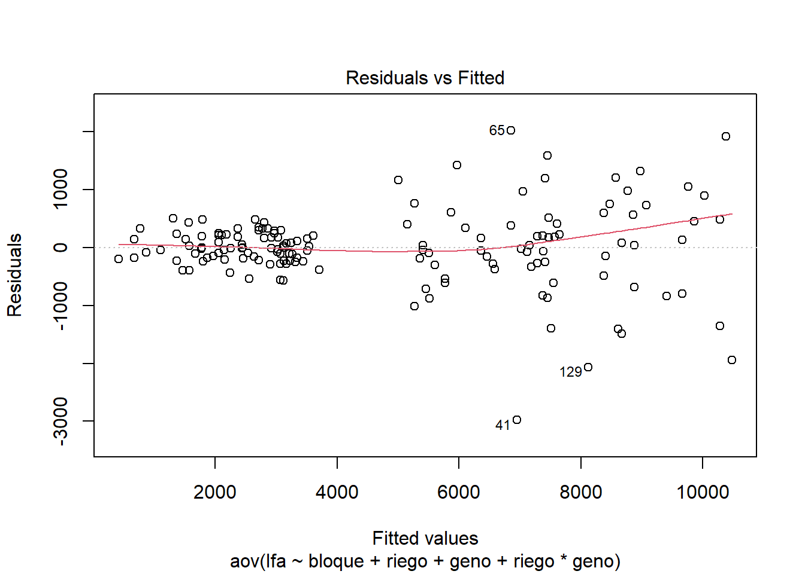
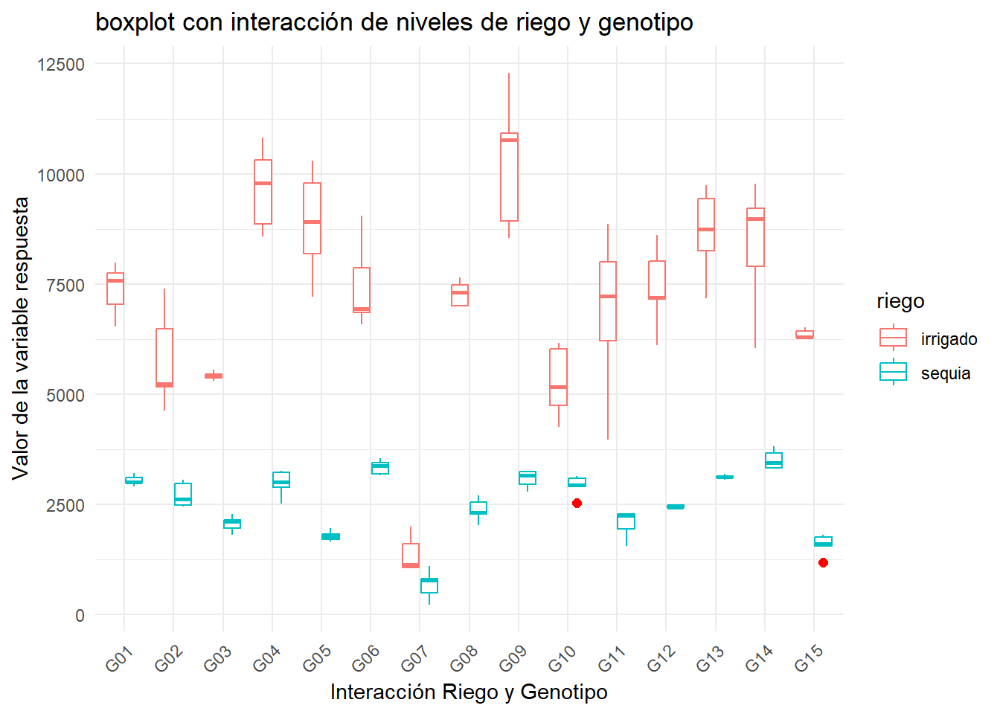

1 + 1[1] 2Quarto enables you to weave together content and executable code into a finished document. To learn more about Quarto see https://quarto.org.
When you click the Render button a document will be generated that includes both content and the output of embedded code. You can embed code like this:
1 + 1[1] 2You can add options to executable code like this
[1] 4The echo: false option disables the printing of code (only output is displayed).
Quarto enables you to weave together content and executable code into a finished document. To learn more about Quarto see https://quarto.org.
When you click the Render button a document will be generated that includes both content and the output of embedded code. You can embed code like this:
1 + 1[1] 2You can add options to executable code like this
[1] 4The echo: false option disables the printing of code (only output is displayed).
| title: “como usar quarto” author: “Hector Stalin Arista Fernandez” format: html: toc: true toc-location: left number-sections: true embed_resources: true |
Quarto enables you to weave together content and executable code into a finished document. To learn more about Quarto see https://quarto.org.
When you click the Render button a document will be generated that includes both content and the output of embedded code. You can embed code like this:
{r} 1 + 1
You can add options to executable code like this
{r} #| echo: false 2 * 2
The echo: false option disables the printing of code (only output is displayed).
Area de una circunferencia \(Area_{circunferencia}=pi.r^2\)
esta es una formula cualquiera \[k=\frac{\left(2x-1\right)^2-1}{4}"\]
| title: “como usar quarto” author: “Hector Arista Fernandez” format: html: toc: true toc-location: left number-sections: true embed_resources: true output-file: index |
# Quarto
Quarto enables you to weave together content and executable code into a finished document. To learn more about Quarto see https://quarto.org.
When you click the Render button a document will be generated that includes both content and the output of embedded code. You can embed code like this:
{r} 1 + 1
You can add options to executable code like this
{r} #| echo: false 2 * 2
The echo: false option disables the printing of code (only output is displayed).
Area de una circunferencia \(Area_{circunferencia}=pi.r^2\)
esta es una formula cualquiera \[k=\frac{\left(2x-1\right)^2-1}{4}"\]
#IMPORTAR ARCHIVO
source('https://inkaverse.com/setup.r')ℹ The googlesheets4 package is using a cached token for
'hectorarista2104@gmail.com'.ℹ The googledrive package is using a cached token for
'hectorarista2104@gmail.com'.url <- "https://docs.google.com/spreadsheets/d/15r7ZwcZZHbEgltlF6gSFvCTFA-CFzVBWwg3mFlRyKPs/edit?gid=172957346#gid=172957346"
gs <- url %>%
as_sheets_id()
gs4_auth()! Using an auto-discovered, cached token. To suppress this message, modify your code or options to clearly consent to
the use of a cached token. See gargle's "Non-interactive auth" vignette for more details: <https://gargle.r-lib.org/articles/non-interactive-auth.html>ℹ The googlesheets4 package is using a cached token for
'hectorarista2104@gmail.com'.fb <- gs %>%
range_read("fb")✔ Reading from "LA MOLINA 2014 POTATO WUE (FB)".✔ Range ''fb''.str(fb)tibble [150 × 18] (S3: tbl_df/tbl/data.frame)
$ riego : chr [1:150] "sequia" "sequia" "irrigado" "sequia" ...
$ geno : chr [1:150] "G01" "G02" "G01" "G02" ...
$ block : num [1:150] 2 4 3 1 2 5 1 4 2 1 ...
$ bloque : chr [1:150] "II" "IV" "III" "I" ...
$ spad_29: num [1:150] 56.3 52.7 49.2 55.5 58.2 43.5 57.4 56.1 61 60.3 ...
$ spad_83: num [1:150] 41.1 47.9 41.6 44.2 32.6 37.8 42.5 35.9 57.5 41.8 ...
$ rwc_84 : num [1:150] 61.5 63.2 67.7 64.9 74.5 ...
$ op_84 : num [1:150] -2.43 -3.03 -2.5 -2.4 -2.27 ...
$ leafdw : num [1:150] 13.28 9.42 18.22 8.84 14.55 ...
$ stemdw : num [1:150] 14.87 8.63 24.19 6.58 12.63 ...
$ rootdw : num [1:150] 3.83 2.1 3.16 2 1.83 2.83 2.28 3.65 4.04 4.17 ...
$ tubdw : num [1:150] 19.8 17.7 38 13.5 51.1 ...
$ biomdw : num [1:150] 51.8 37.8 83.6 30.9 80.2 ...
$ hi : num [1:150] 0.45 0.43 0.455 0.437 0.638 ...
$ ttrans : num [1:150] 4.5 3.54 8.39 2.9 7.37 ...
$ wue : num [1:150] 11.51 10.69 9.97 10.65 10.88 ...
$ twue : num [1:150] 4.4 4.99 4.53 4.65 6.94 ...
$ lfa : num [1:150] 2900 2619 7579 2450 5413 ...modelo <- aov(formula = lfa ~ bloque + riego + geno + riego*geno
,data = fb)
anova(modelo)Analysis of Variance Table
Response: lfa
Df Sum Sq Mean Sq F value Pr(>F)
bloque 4 3435339 858835 1.5616 0.1892
riego 1 788556926 788556926 1433.7957 <0.0000000000000002 ***
geno 14 261729564 18694969 33.9922 <0.0000000000000002 ***
riego:geno 14 108147972 7724855 14.0457 <0.0000000000000002 ***
Residuals 116 63797516 549979
---
Signif. codes: 0 '***' 0.001 '**' 0.01 '*' 0.05 '.' 0.1 ' ' 1plot(modelo)


ggplot(fb, aes(x = geno, y = lfa, colour = riego)) +
geom_boxplot(outlier.colour = "red" , outlier.shape = 16, outlier.size = 2) +
labs(title = "boxplot con interacción de niveles de riego y genotipo" ,
x = "Interacción Riego y Genotipo",
y = "Valor de la variable respuesta") +
theme_minimal() +
theme(axis.text.x = element_text(angle = 45, hjust = 1)) #Inclinar etiquetas del eje x
modelo <- aov(formula = hi ~ bloque + riego + geno + riego*geno
,data = fb)
anova(modelo)
## Analysis of Variance Table
##
## Response: hi
## Df Sum Sq Mean Sq F value Pr(>F)
## bloque 4 0.09111 0.022778 7.0747 0.00003925028 ***
## riego 1 0.12176 0.121758 37.8165 0.00000001135 ***
## geno 14 2.70077 0.192912 59.9161 < 0.00000000000000022 ***
## riego:geno 14 0.07762 0.005544 1.7219 0.06019 .
## Residuals 116 0.37349 0.003220
## ---
## Signif. codes: 0 '***' 0.001 '**' 0.01 '*' 0.05 '.' 0.1 ' ' 1
plot(modelo)


library(lme4)
modelo <- lme4::lmer(formula = lfa ~ riego + geno + riego*geno + (1|bloque)
,data = fb)
anova(modelo)
## Analysis of Variance Table
## npar Sum Sq Mean Sq F value
## riego 1 788556926 788556926 1433.796
## geno 14 261729564 18694969 33.992
## riego:geno 14 108147972 7724855 14.046
plot(modelo)
library(inti)
names(fb)
## [1] "riego" "geno" "block" "bloque" "spad_29" "spad_83" "rwc_84"
## [8] "op_84" "leafdw" "stemdw" "rootdw" "tubdw" "biomdw" "hi"
## [15] "ttrans" "wue" "twue" "lfa"
str(fb)
## tibble [150 × 18] (S3: tbl_df/tbl/data.frame)
## $ riego : chr [1:150] "sequia" "sequia" "irrigado" "sequia" ...
## $ geno : chr [1:150] "G01" "G02" "G01" "G02" ...
## $ block : num [1:150] 2 4 3 1 2 5 1 4 2 1 ...
## $ bloque : chr [1:150] "II" "IV" "III" "I" ...
## $ spad_29: num [1:150] 56.3 52.7 49.2 55.5 58.2 43.5 57.4 56.1 61 60.3 ...
## $ spad_83: num [1:150] 41.1 47.9 41.6 44.2 32.6 37.8 42.5 35.9 57.5 41.8 ...
## $ rwc_84 : num [1:150] 61.5 63.2 67.7 64.9 74.5 ...
## $ op_84 : num [1:150] -2.43 -3.03 -2.5 -2.4 -2.27 ...
## $ leafdw : num [1:150] 13.28 9.42 18.22 8.84 14.55 ...
## $ stemdw : num [1:150] 14.87 8.63 24.19 6.58 12.63 ...
## $ rootdw : num [1:150] 3.83 2.1 3.16 2 1.83 2.83 2.28 3.65 4.04 4.17 ...
## $ tubdw : num [1:150] 19.8 17.7 38 13.5 51.1 ...
## $ biomdw : num [1:150] 51.8 37.8 83.6 30.9 80.2 ...
## $ hi : num [1:150] 0.45 0.43 0.455 0.437 0.638 ...
## $ ttrans : num [1:150] 4.5 3.54 8.39 2.9 7.37 ...
## $ wue : num [1:150] 11.51 10.69 9.97 10.65 10.88 ...
## $ twue : num [1:150] 4.4 4.99 4.53 4.65 6.94 ...
## $ lfa : num [1:150] 2900 2619 7579 2450 5413 ...
model <- remove_outliers(
data = fb,
formula = lfa ~ riego + geno + riego*geno + (1|bloque),
plot_diag = TRUE
)
model
## $data
## $data$raw
## # A tibble: 150 × 5
## index riego geno bloque lfa
## <chr> <chr> <chr> <chr> <dbl>
## 1 1 sequia G01 II 2900
## 2 2 sequia G02 IV 2619.
## 3 3 irrigado G01 III 7579.
## 4 4 sequia G02 I 2450.
## 5 5 irrigado G03 II 5413.
## 6 6 irrigado G04 V 9791.
## 7 7 irrigado G01 I 7038.
## 8 8 irrigado G05 IV 9794.
## 9 9 sequia G06 II 3199.
## 10 10 sequia G05 I 1658.
## # ℹ 140 more rows
##
## $data$clean
## index riego geno bloque lfa
## 1 1 sequia G01 II 2900.00
## 2 2 sequia G02 IV 2618.85
## 3 3 irrigado G01 III 7578.79
## 4 4 sequia G02 I 2449.59
## 5 5 irrigado G03 II 5412.51
## 6 6 irrigado G04 V 9791.10
## 7 7 irrigado G01 I 7038.08
## 8 8 irrigado G05 IV 9793.99
## 9 9 sequia G06 II 3198.96
## 10 10 sequia G05 I 1657.64
## 11 11 irrigado G01 II 7982.73
## 12 12 sequia G07 II 1097.98
## 13 13 irrigado G08 II 7310.01
## 14 14 irrigado G06 III 6576.65
## 15 15 irrigado G09 III 10764.71
## 16 16 irrigado G10 II 5171.21
## 17 17 sequia G11 I 1556.38
## 18 18 sequia G12 III 2425.26
## 19 19 irrigado G07 I 1065.26
## 20 20 irrigado G04 II 10811.84
## 21 21 irrigado G13 II 9743.70
## 22 22 irrigado G14 III 7895.00
## 23 23 irrigado G04 IV 10305.61
## 24 24 sequia G04 V 3218.63
## 25 25 sequia G08 V 2697.93
## 26 26 sequia G04 III 3263.70
## 27 27 sequia G01 IV 2994.58
## 28 28 irrigado G10 I 6164.24
## 29 29 irrigado G08 V 7469.58
## 30 30 irrigado G02 V 5233.55
## 31 31 irrigado G07 III 1607.25
## 32 32 irrigado G08 I 6998.00
## 33 33 irrigado G14 V 8978.89
## 34 34 irrigado G03 I 5545.69
## 35 35 sequia G13 III 3120.00
## 36 36 sequia G01 V 2999.66
## 37 37 sequia G03 I 2274.48
## 38 38 irrigado G15 III 6302.79
## 39 39 irrigado G03 IV 5305.77
## 40 40 irrigado G09 IV NA
## 41 41 irrigado G11 II NA
## 42 42 sequia G03 V 2147.55
## 43 43 sequia G11 III 2301.31
## 44 44 irrigado G06 V NA
## 45 45 sequia G05 V 1771.80
## 46 46 sequia G08 IV 2021.37
## 47 47 irrigado G11 IV 8005.55
## 48 48 sequia G11 II 1942.23
## 49 49 irrigado G10 III 6028.93
## 50 50 sequia G06 IV 3550.19
## 51 51 sequia G09 I 3238.41
## 52 52 irrigado G11 I 6210.41
## 53 53 sequia G11 IV 2237.88
## 54 54 irrigado G15 IV 6270.00
## 55 55 irrigado G13 IV 9430.43
## 56 56 sequia G14 V 3664.65
## 57 57 irrigado G02 IV NA
## 58 58 irrigado G09 II NA
## 59 59 irrigado G02 III 5162.74
## 60 60 sequia G08 III 2550.51
## 61 61 irrigado G06 II 6938.90
## 62 62 sequia G13 IV 3062.34
## 63 63 sequia G14 III 3449.76
## 64 64 sequia G04 II 2511.13
## 65 65 irrigado G11 III NA
## 66 66 irrigado G07 II 1068.97
## 67 67 irrigado G08 IV 7643.80
## 68 68 sequia G05 IV 1821.46
## 69 69 irrigado G04 I 8569.08
## 70 70 irrigado G11 V 7225.02
## 71 71 irrigado G12 I 7194.26
## 72 72 sequia G14 IV 3318.36
## 73 73 sequia G07 III 811.45
## 74 74 irrigado G03 III 5450.00
## 75 75 sequia G01 I 3100.00
## 76 76 sequia G04 I 3010.27
## 77 77 sequia G03 II 2107.76
## 78 78 irrigado G15 II 6304.88
## 79 79 sequia G12 IV 2480.00
## 80 80 sequia G12 I 2400.00
## 81 81 sequia G08 I 2319.71
## 82 82 sequia G05 II 1700.00
## 83 83 sequia G02 II 2966.18
## 84 84 sequia G10 I 3136.07
## 85 85 sequia G15 I 1814.84
## 86 86 irrigado G07 V 1140.05
## 87 87 sequia G10 V 2909.10
## 88 88 sequia G13 II 3110.00
## 89 89 sequia G07 V 495.83
## 90 90 sequia G03 III 1953.50
## 91 91 sequia G15 IV 1750.00
## 92 92 sequia G13 I 3191.97
## 93 93 sequia G03 IV 1811.97
## 94 94 irrigado G10 V 4249.18
## 95 95 sequia G13 V 3146.19
## 96 96 sequia G09 II 3235.10
## 97 97 irrigado G14 IV NA
## 98 98 irrigado G01 V 6539.86
## 99 99 sequia G01 III 3203.70
## 100 100 irrigado G06 IV 7864.08
## 101 101 sequia G04 IV 2889.83
## 102 102 irrigado G15 V 6522.46
## 103 103 irrigado G13 III NA
## 104 104 irrigado G02 II 6478.14
## 105 105 sequia G08 II 2278.60
## 106 106 irrigado G04 III 8867.03
## 107 107 sequia G02 V 3063.35
## 108 108 sequia G06 V 3159.54
## 109 109 irrigado G15 I 6435.00
## 110 110 irrigado G13 V 8750.00
## 111 111 irrigado G05 V 8189.67
## 112 112 sequia G09 III 2961.78
## 113 113 sequia G09 V 2781.32
## 114 114 sequia G10 II 2940.95
## 115 115 irrigado G07 IV 1989.25
## 116 116 irrigado G05 I NA
## 117 117 irrigado G02 I 4631.00
## 118 118 sequia G05 III 1967.49
## 119 119 irrigado G12 II NA
## 120 120 sequia G15 III 1601.06
## 121 121 irrigado G13 I 8256.98
## 122 122 sequia G14 II 3811.99
## 123 123 sequia G12 II 2438.98
## 124 124 sequia G15 II 1560.00
## 125 125 irrigado G09 V NA
## 126 126 sequia G06 I 3381.68
## 127 127 sequia G09 IV 3150.00
## 128 128 sequia G15 V 1176.63
## 129 129 irrigado G14 I NA
## 130 130 sequia G06 III 3450.00
## 131 131 irrigado G01 IV 7750.00
## 132 132 irrigado G12 III 7164.03
## 133 133 sequia G12 V 2487.78
## 134 134 irrigado G12 V 8603.78
## 135 135 sequia G11 V 2274.26
## 136 136 irrigado G12 IV 8012.79
## 137 137 irrigado G09 I 10919.31
## 138 138 sequia G02 III 2487.28
## 139 139 sequia G07 I 216.31
## 140 140 irrigado G08 III 7012.74
## 141 141 irrigado G06 I 6857.13
## 142 142 irrigado G10 IV 4743.16
## 143 143 irrigado G03 V 5369.88
## 144 144 sequia G07 IV 782.10
## 145 145 irrigado G05 III 8913.12
## 146 146 sequia G14 I 3326.93
## 147 147 sequia G10 III 3096.00
## 148 148 irrigado G14 II 9221.24
## 149 149 irrigado G05 II NA
## 150 150 sequia G10 IV 2541.12
##
##
## $outliers
## index riego geno bloque lfa resi res_MAD rawp.BHStud
## 40 40 irrigado G09 IV 8533.54 -1821.843 -5.382198 0.00000007358196186
## 41 41 irrigado G11 II 3966.33 -2921.009 -8.629420 0.00000000000000000
## 44 44 irrigado G06 V 9040.06 1586.844 4.687948 0.00000275958224139
## 57 57 irrigado G02 IV 7392.38 1545.147 4.564765 0.00000500053779318
## 58 58 irrigado G09 II 12296.22 1976.049 5.837760 0.00000000529071831
## 65 65 irrigado G11 III 8867.09 2014.449 5.951205 0.00000000266175237
## 97 97 irrigado G14 IV 9776.01 1324.207 3.912051 0.00009151556329234
## 103 103 irrigado G13 III 7180.79 -1489.351 -4.399930 0.00001082858978219
## 116 116 irrigado G05 I 7205.94 -1577.072 -4.659080 0.00000317625961999
## 119 119 irrigado G12 II 6111.43 -1338.287 -3.953649 0.00007696837896431
## 125 125 irrigado G09 V 8924.78 -1360.784 -4.020111 0.00005817084375703
## 129 129 irrigado G14 I 6049.52 -2238.868 -6.614197 0.00000000003735745
## 149 149 irrigado G05 II 10291.06 1379.845 4.076419 0.00004573459036372
## adjp bholm out_flag
## 40 0.00000007358196186 0.00001074296643 OUTLIER
## 41 0.00000000000000000 0.00000000000000 OUTLIER
## 44 0.00000275958224139 0.00040013942500 OUTLIER
## 57 0.00000500053779318 0.00071507690442 OUTLIER
## 58 0.00000000529071831 0.00000077773559 OUTLIER
## 65 0.00000000266175237 0.00000039393935 OUTLIER
## 97 0.00009151556329234 0.01262914773434 OUTLIER
## 103 0.00001082858978219 0.00153765974907 OUTLIER
## 116 0.00000317625961999 0.00045738138528 OUTLIER
## 119 0.00007696837896431 0.01069860467604 OUTLIER
## 125 0.00005817084375703 0.00814391812598 OUTLIER
## 129 0.00000000003735745 0.00000000556626 OUTLIER
## 149 0.00004573459036372 0.00644857724128 OUTLIER
##
## $diagplot
##
## $model
## $model$raw
## Linear mixed model fit by REML ['lmerMod']
## Formula: lfa ~ riego + geno + riego * geno + (1 | bloque)
## Data: rawdt
## REML criterion at convergence: 1976.727
## Random effects:
## Groups Name Std.Dev.
## bloque (Intercept) 101.5
## Residual 741.6
## Number of obs: 150, groups: bloque, 5
## Fixed Effects:
## (Intercept) riegosequia genoG02
## 7377.89 -4338.30 -1598.33
## genoG03 genoG04 genoG05
## -1961.12 2291.04 1500.86
## genoG06 genoG07 genoG08
## 77.47 -6003.74 -91.07
## genoG09 genoG10 genoG11
## 2909.82 -2106.55 -523.01
## genoG12 genoG13 genoG14
## 39.37 1294.49 1006.24
## genoG15 riegosequia:genoG02 riegosequia:genoG03
## -1010.87 1275.79 980.59
## riegosequia:genoG04 riegosequia:genoG05 riegosequia:genoG06
## -2351.92 -2756.77 231.01
## riegosequia:genoG07 riegosequia:genoG08 riegosequia:genoG09
## 3644.88 -574.90 -2876.09
## riegosequia:genoG10 riegosequia:genoG11 riegosequia:genoG12
## 1991.61 -454.16 -632.55
## riegosequia:genoG13 riegosequia:genoG14 riegosequia:genoG15
## -1207.98 -531.49 -448.22
##
## $model$clean
## Linear mixed model fit by REML ['lmerMod']
## Formula: lfa ~ riego + geno + riego * geno + (1 | bloque)
## Data: cleandt
## REML criterion at convergence: 1651.184
## Random effects:
## Groups Name Std.Dev.
## bloque (Intercept) 106.6
## Residual 432.2
## Number of obs: 137, groups: bloque, 5
## Fixed Effects:
## (Intercept) riegosequia genoG02
## 7377.89 -4338.30 -1980.26
## genoG03 genoG04 genoG05
## -1961.12 2291.04 1579.63
## genoG06 genoG07 genoG08
## -326.74 -6003.74 -91.07
## genoG09 genoG10 genoG11
## 3532.95 -2106.55 -212.24
## genoG12 genoG13 genoG14
## 387.00 1660.20 1312.54
## genoG15 riegosequia:genoG02 riegosequia:genoG03
## -1010.87 1657.73 980.59
## riegosequia:genoG04 riegosequia:genoG05 riegosequia:genoG06
## -2351.92 -2835.54 635.22
## riegosequia:genoG07 riegosequia:genoG08 riegosequia:genoG09
## 3644.88 -574.90 -3499.22
## riegosequia:genoG10 riegosequia:genoG11 riegosequia:genoG12
## 1991.61 -764.94 -980.19
## riegosequia:genoG13 riegosequia:genoG14 riegosequia:genoG15
## -1573.69 -837.79 -448.22